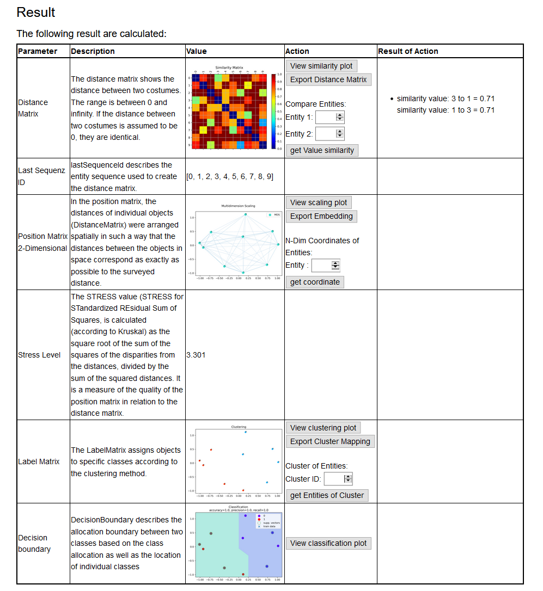

QHAna User Guide (for the old QHAna prototype)
QHAna - The Quantum Humanities Analysis Tool is a toolset of Machine Learning techniques for classical and quantum hardware, designed for the use with the MUSE Repository. It comprises a rich set of techniques, mostly for categorical data. The tools are split up into 4 different categories: Data Preparation, Feature Engineering, Clustering, and Classification.
From each category various alternative methods can be selected to be used for the analysis. Currently, the toolset will assume and apply one of the following data flows depending on whether tools of the respective categories were initialized:
- Data Preparation → Feature Engineering
- Data Preparation → Feature Engineering → Clustering
- Data Preparation → Feature Engineering → Classification
- Data Preparation → Feature Engineering → Clustering → Classification
I.e., Data Preparation and Feature Engineering are mandatory to run an analysis.
Setting up an Analysis
Data Preparation
In order to use the machine learning techniques, one needs to convert categorical data into a numerical representation. This is done in the Data Preparation step. Go to Data Preparation in the navigation bar to select a Data Preparation method. One-Hot-Encoding is not yet implemented. Thus, select Distance Space Computation.

Costumes is pre-selected since it's the only repository available in this prototype. Click on Definition to choose which attributes from the repository shall be included in the data preparation. A list of attributes similar to the figure below will appear. Tick the attributes that shall be fetched from the repository. For each attribute that shall be included into the computations, select an Element Comparer, an Attribute Comparer, and an Empty Attribute Action from the respective dropdown list.
An Aggregator Type and Transformer Type can be selected via the dropdown lists above the attribute list.
After finishing the definition of the distance space, go back to Distance Space Computation via the navigation bar and click on Similarities to select the data set to be loaded from the repository. There are four pre-defined subsets of the data available (see figure below). The size of these subsets is indicated in their names. Alternatively, a random sample of entities can be loaded. Select one of the subsets or a random sample of preferred size and click initialize.
The setup of the Data Preparation step is now complete.
Feature Engineering
Once a numerical representation (mostly similarities or dissimilarities) has been found for the categorical data, the next step is to map those values to metrices in order to get real distances. Moreover, as in most cases the data consist of multiple properties, i.e., living in a high dimensional computation space, it is necessary to apply a dimensionality reduction scheme.
Go to Feature Engineering in the navigation bar. Since the Autoencoder and Principle Component Analysis (PCA) are not yet implemented, click on Embedding.
Click initialize to initialize the Multidimensional Scaling (MDS).
Change the parameters for the MDS (not shown) as desired and click set parameters (optional in case nothing was changed).
By default MDS will reduce the data to two dimensions.
Note
MDS by default is not deterministic. I.e., the Feature Engineering step may produce different results in each run on the same similarity matrix. Set the Static Eulidean Coordinates checkbox in the MDS parameter list if this is not desired. This way the previous Euclidean Coordinates will be reused for the same similarity matrix and thus the same output will be produced in each run.
Clustering
Note
Setting up Clustering is optional.
Having real distances between data points allows the usage of well known (and experimental) clustering algorithms. Via the navigation bar go to the Clustering menu. Select one of the available clustering algorithms and click initialize. Change parameters as desired or use the default values.
Classification
Note
Setting up Classification is optional.
Via the navigation bar go to Classification. There are three submenus available.
Data Labeler
Since classification is supervised learning it requires labelled data. In the Data Labeler submenu, there are three labeling strategies available (brief explanation follows below the figure).
- Fixed subset: The pre-defined subsets were categorized manually into two classes. This labeler uses labels based on that categorization.
- Attribute: This labeler can be used to assign labels to data points based on an attribute. Important: The attribute needs to be included in the fetched data (see
Data Preparationstep). I.e., at least the checkbox for the respective attribute needs to be set. It is not necessary to include the attribute in computations by setting Element and Attribute Comparers. - Clustering: This strategy takes the labels produced in the clustering step in the same run. This requires that a clustering method is initialized.
Data Splitter
Typically for supervised learning one needs to assess the success of the learning to detect problems, such as overfitting. This is done by splitting the data into two parts: a training set and a test set. The classifier will be trained only on the training set. After training, the test set is used to determine how accurate the classifier is.
Initialize one of the four splitting strategies in the Data Splitter submenu and set its parameters if applicable.
Classifier
In the Classifier submenu, select and initialize one of the available classification algorithms and change its parameters as desired.
Running the Analysis
In order to run the configured analysis go to Overview in the navigation bar and click on Calculating. There will be a summary of the setup. At the top click Start calculating to start the calculations. This may take some time depending on the selected algorithms. Once calculations are complete, the application forwards to the Result page.
Result
The Result page shows diagrams of the results of each step that was set up.
